Part16 TransXで月から地球へ
月から地球に降下するため、Plan（軌道の計画）を作成します。
今回の目的
月面上の宇宙船は、月と一緒に、地球を中心とした楕円軌道に乗っている。
したがって、地球の重力に引かれて「月軌道から地球に落ちる」必要がある。
地球に対して減速する（月の進行方向の逆に加速する）ことで、月から地球に降下できる。
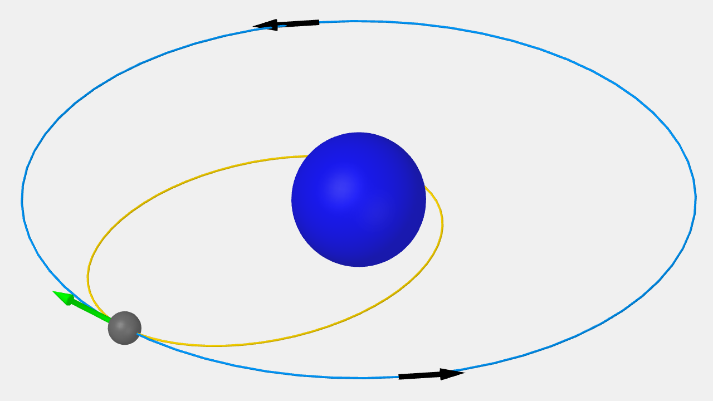
緑の矢印の方向に加速すると、減速して黄色の楕円軌道に乗る。
打ち上げ前に、地球降下軌道を計画しておく。
次に、この地球降下軌道に接続できるような月周回軌道を考える。
設定した月周回軌道にもとづいて、打ち上げ方位が決定される。
「あらかじめ軌道を計画する」ことを、このチュートリアルではPlanの作成と呼ぶ。
Planの作成を開始する
左右のMFDでTransXを開く。
月面から地球までのPlanを作成する。
打ち上げ・パーキング軌道はEscape Plan。
地球降下軌道はEject Planで設定する。
月の重力圏を出る
左MFDでView:Setupを表示する。
Select Targetで++をクリック。
Escapeを選択する。
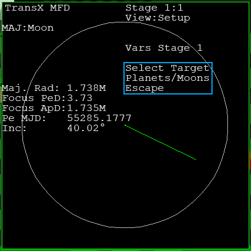
月の重力圏を脱出するため、Escapeをターゲットに設定する。
Eject Plan
右MFDでFWDをクリック。
Stage 2にする。
VWを何度かクリック。
View:Eject Planに切り替える。
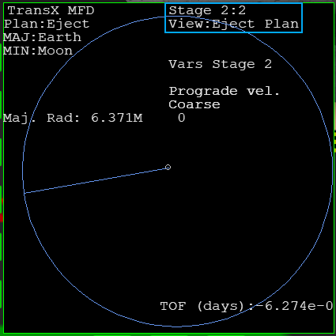
Eject Planで、「地球に落ちる」軌道を計画する。
地球降下軌道
Prograde vel.を選択しておく。
見つからない場合は、VARをクリック。
--を何回かクリックする。
黄色の点線を細長い楕円軌道にする。
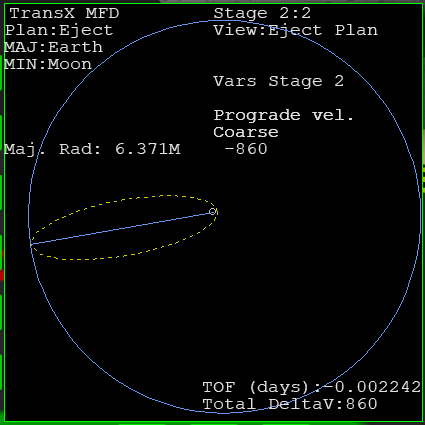
VWをクリック。
View:Setupに切り替える。
VARを何度かクリック。
Scale to Viewを選択する。
++をクリック。
Targetにする。
地球周辺が拡大表示される。
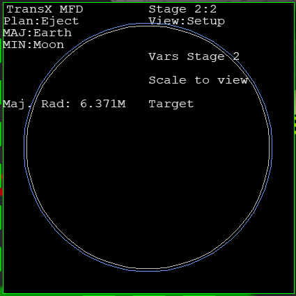
View:Eject Planに戻す。
またPrograde vel.を操作する。
白い円が地表、青い円が大気を表している。
大気圏に入らない程度に、軌道を地球に近づける。
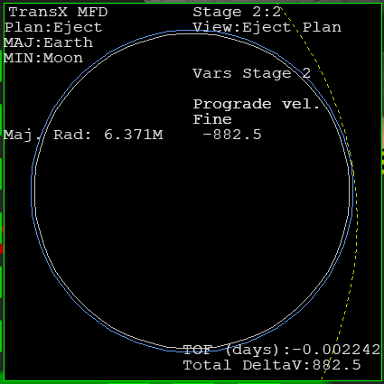
Escape Plan
降下軌道に接続できる月周回軌道を考える。
この軌道のことをパーキング軌道と呼ぶ。
左MFDのStage 1に戻る。
View:Setupを表示しておく。
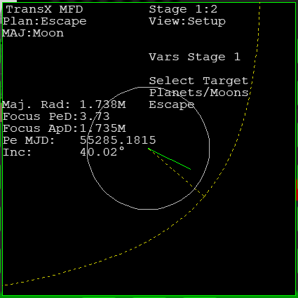
VARを何度かクリック。
Scale to viewをTargetにする。
-VRをクリック。
Graph projectionをPlanにする。
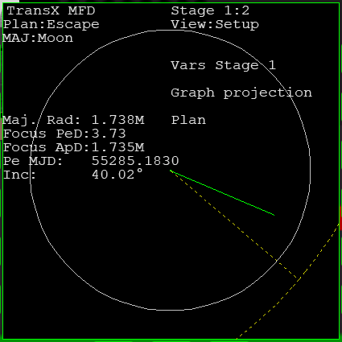
VWをクリック。
View:Escape Planにする。
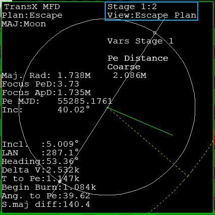
パーキング軌道の高度
Pe Distanceを選択しておく。
パーキング軌道の高度を入力する。
Maj. Rad（月の半径）を基準にする。
ENTをクリック。
1758000と入力する。
数字を入力したらEnterを押す。
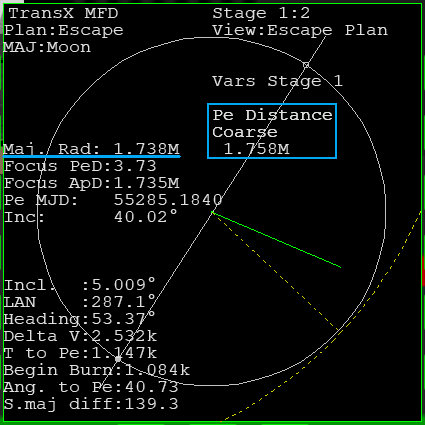
| Pe Distance | Periapsis distance | Peの天体中心からの距離 |
| Maj. Rad | Radius of the major body | 中心天体の半径 |
月の半径は、約1.738Mm（メガメートル） = 1,738km = 1738000mである。
これに20km(20000m)を足すと、1.758Mm = 1758000mになる。
打ち上げ方位を決定する
VARをクリック。
Ej Orientationを選択する。
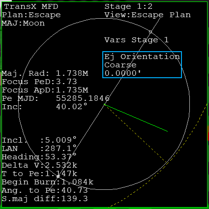
++を長押しクリックする。
白い直線と緑の線が重なるようにする。
これで打ち上げ方位が決定される。
Headingの方位に向かって打ち上げる。
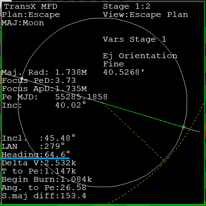